2025-2026学年七年级数学上学期第一次月考卷
强化卷·考试版
（考试时间：120分钟 试卷满分：120分）
注意事项：
1．答卷前，考生务必将自己的姓名、准考证号填写在答题卡上。
2．回答选择题时，选出每小题答案后，用铅笔把答题卡上对应题目的答案标号涂黑。如需改动，用橡皮擦干净后，再选涂其他答案标号。回答非选择题时，将答案写在答题卡上。写在本试卷上无效。
3．考试结束后，将本试卷和答题卡一并交回。
4．测试范围：北师大版2024七年级上册第一章~第二章。
一、选择题（本大题共10小题，每小题3分，共30分）
1．下列各数是负数的是（ ）
A．
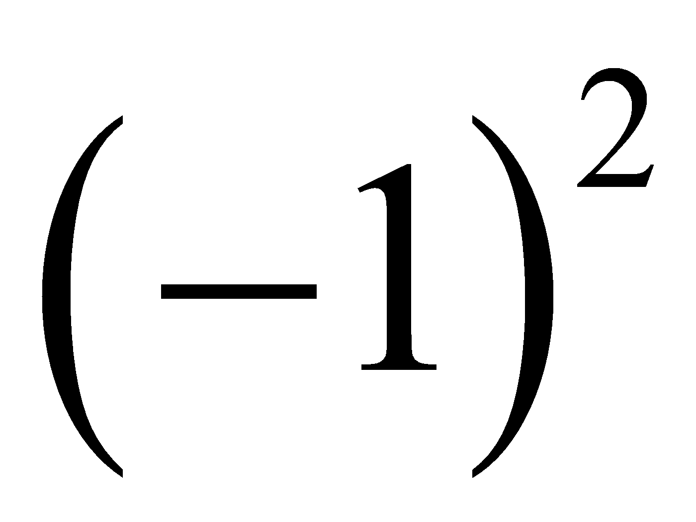
B．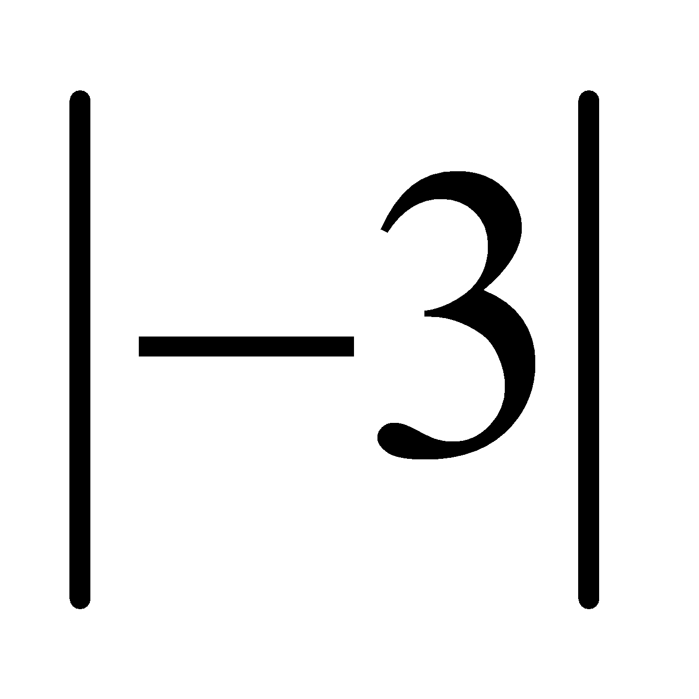
C． D．
D．
2．山西省2025年初中学业水平体育考试所用排球为室内排球5号球（质量260g至280g）．如图，以270g为标准质量，检测了四个排球的质量，超过标准质量的克数记作正数，不足标准质量的克数记作负数．其中最接近标准质量的是（ ）
A． B．
B．
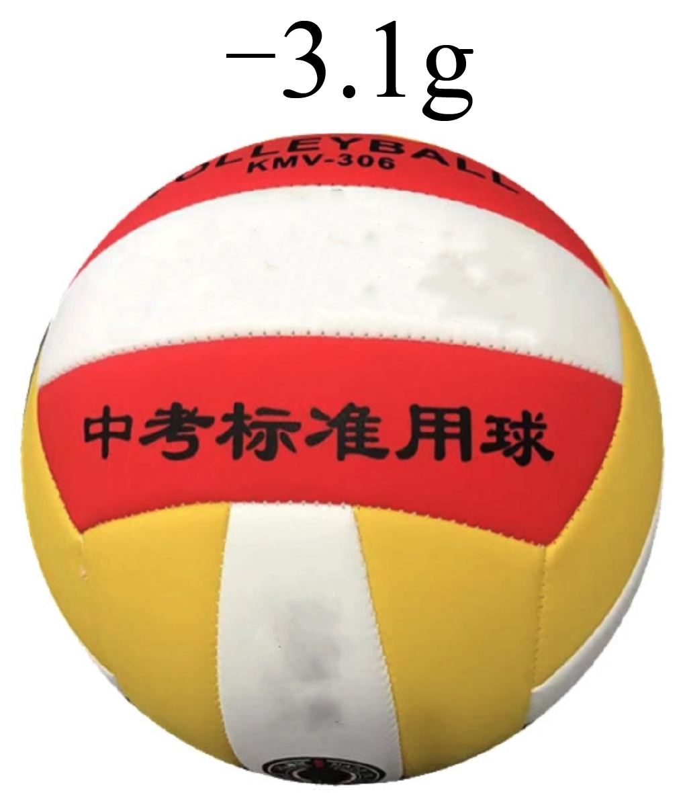
C． D．
3．电视剧《西游记》中，孙悟空的“金箍棒”（金箍棒看成一条线）飞速旋转，形成一圆面，这说明了（ ）
A．点动成线 B．线动成面
C．面动成体 D．两点确定一条直线
4．篆刻是中华传统艺术之一，雕刻印章是篆刻基本功左图是一块雕刻印章的材料，从左面看到的平面图形为（ ）
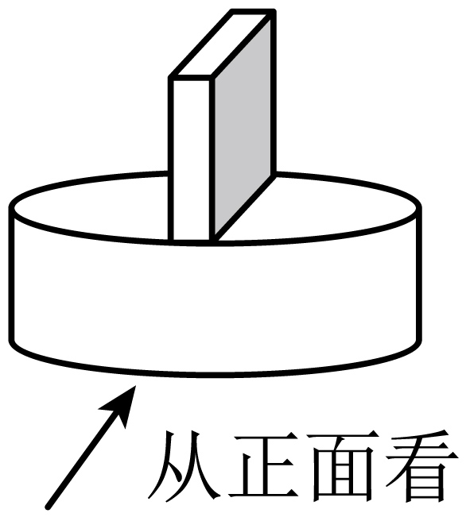
A． B．
B． C．
C． D．
D．
5．用一个平面去截一个几何体，若截面的形状是长方形，则原来的几何体不可能是（ ）
A．圆柱 B．正方体 C．三棱柱 D．圆锥
6．有下列四个算式中，错误的有（ ）
① ；②
；② ；③
；③ ；④
；④
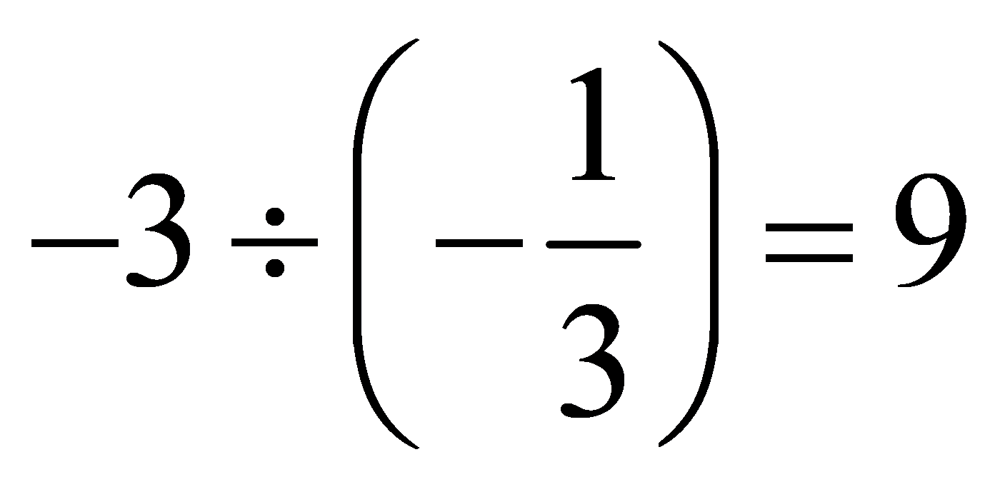
．A．0个 B．1个 C．2个 D．3个
7．有一个数值转换器，其工作原理如图．若输入的 值为23，则输出的结果是（ ）
值为23，则输出的结果是（ ）

A．8 B．6 C．－4 D．10
8．如图，都是正方体的展开图，若将它们围成正方体，则其中两个正方体各面图案完全一样，它们是（ ）

A．①与③ B．②与③ C．①与④ D．②与③与④
9．有理数a，b在数轴上的对应点如图，则下面式子中正确的是（ ）

① ；②
；② ；③
；③ ；④
；④ ．
．
A．①② B．①④ C．②③ D．③④
10．如图所示，某同学用透明的硅胶泥做成一个正方体．并用薄塑料刀竖直切割这个正方体，分成了左右两个长方体 和
和 ，若这两个长方体的体积之比为
，若这两个长方体的体积之比为 ，则长方体和的表面展开图的面积之比为（ ）
，则长方体和的表面展开图的面积之比为（ ）
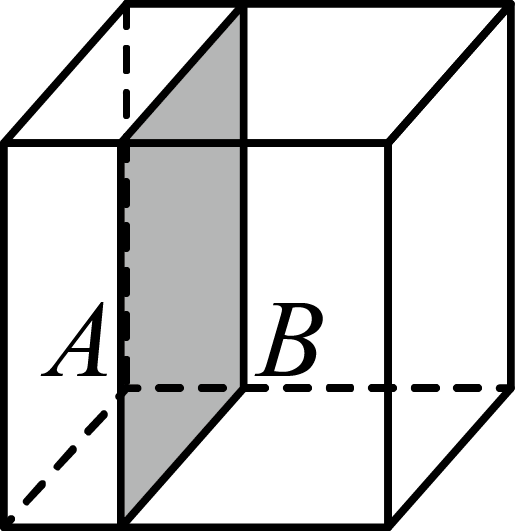
A．
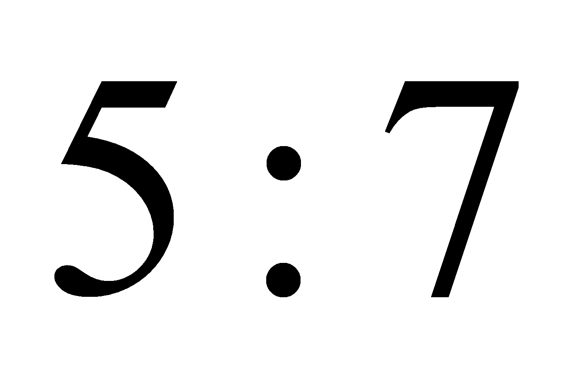
B． C． D．
D．
二、填空题（本大题共6小题，每小题3分，共18分）
11．拒绝餐桌浪费，刻不容缓．一个人一日三餐少浪费一粒米，全国一年就可以节省3240万斤粮食，3240万用科学记数法表示为
12．如图，是一个正方体的表面展开图，若正方体中相对的面上的数互为相反数，则
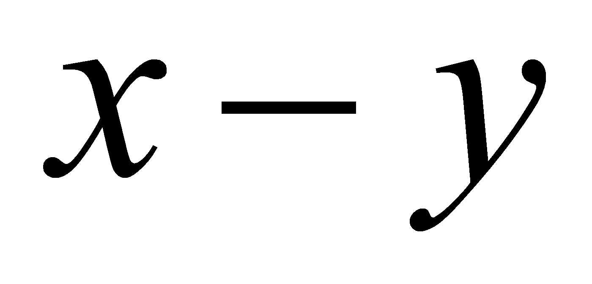
的值为 ．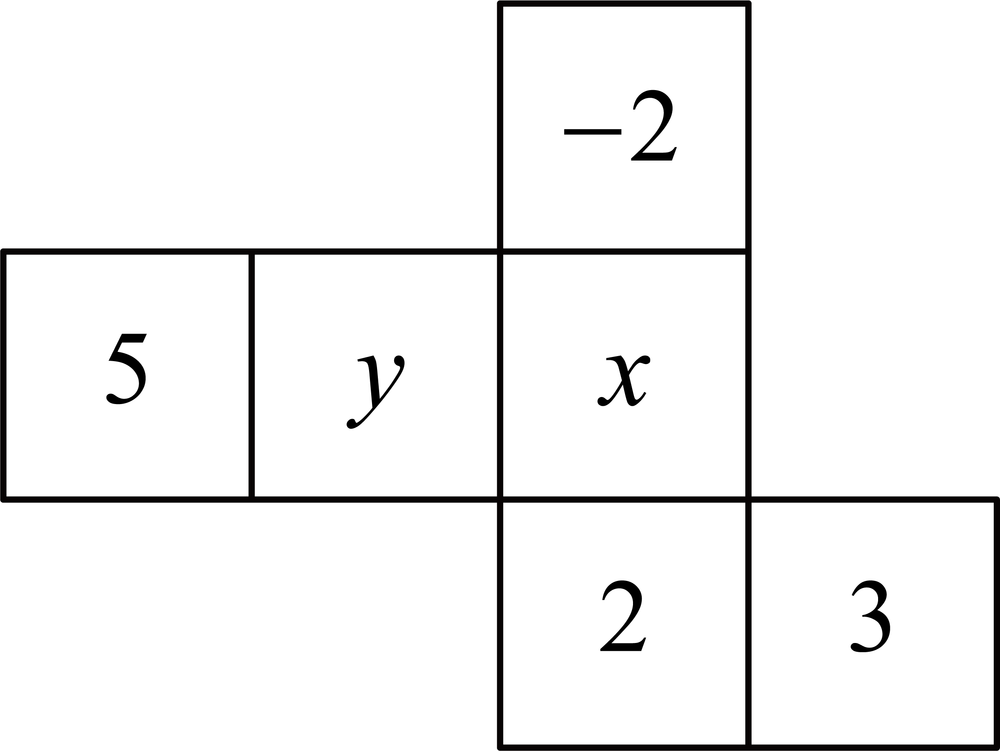
13．已知 ，且
，且 ，则
，则 ．
．
14．如图，现有三种不同型号的卡片共12张，其中有3张边长为3
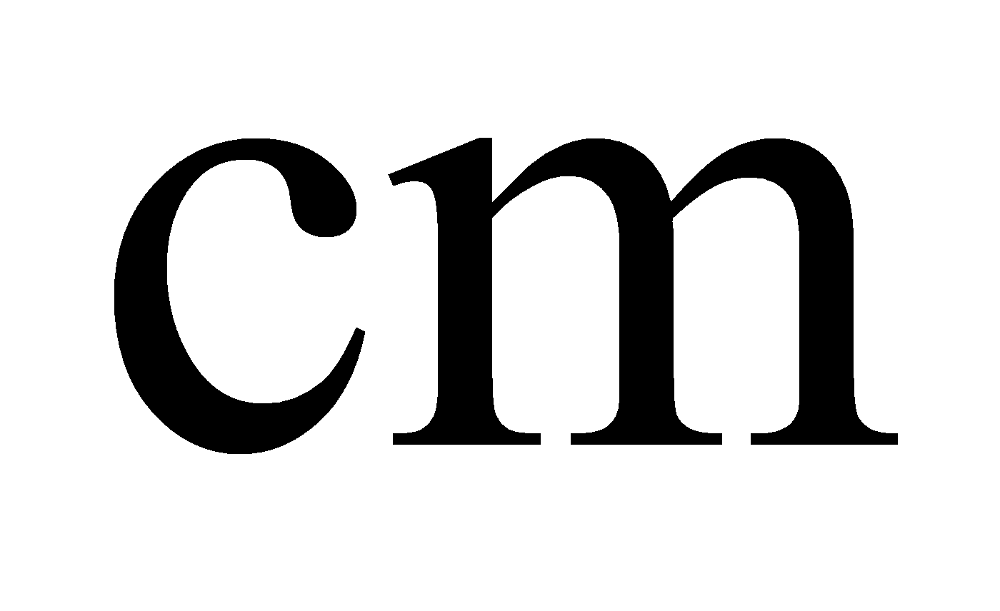
的正方形型卡片，有4张长为3，宽为2的长方形型卡片，有5张边长为2的正方形 型卡片．我们可以选取一些卡片，无重叠，无缝隙地拼成不同形状的长方形，那么能拼成面积最大的长方形的面积是
型卡片．我们可以选取一些卡片，无重叠，无缝隙地拼成不同形状的长方形，那么能拼成面积最大的长方形的面积是  ．
．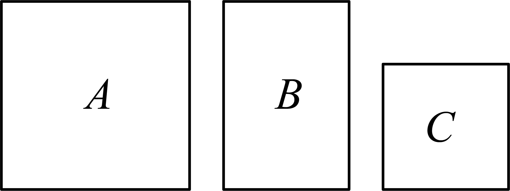
15．定义一种新运算 ，规定运算法则为：
，规定运算法则为： （m，n均为整数，且
（m，n均为整数，且 ）．例：
）．例： ，再定义另一种新运算“☆”，对于任意有理数a，b和c，
，再定义另一种新运算“☆”，对于任意有理数a，b和c，
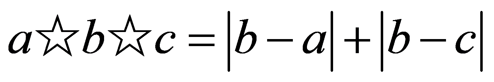
， 比如 ，请计算
，请计算
16．一个几何体由若干个完全相同的小正方体搭成．从正面和上面看这个几何体，看到的形状图如图所示，则这个几何体可能由 个小正方体搭成．

三、解答题（第17，18，19，20题，每题6分；第21，22，23题，每题8分；第24，25题，每题12分；共9小题，共72分）
17．计算
(1) ；
；
(2) ．
．
18．现有一列数： 、、
、、 、
、 、
、 ，请回答下列问题：
，请回答下列问题：
(1)其中非负数有______个；
(2)其中到原点距离相等的两个数是______；
(3)画出数轴，并在数轴上表示这一列数，再用“ ”连接起来．
”连接起来．
19．小军和小红分别以直角梯形的上底和下底为轴，将梯形旋转一周，得到的两个立体图形．
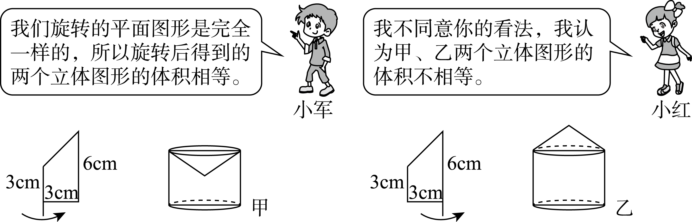
(1)你同意________的说法；
(2)为了研究你的猜想是否正确，你需要求出两个立体图形的体积，请列式计算甲、乙立体图形的体积并求出它们的比值是多少？
20．规定一种新的运算，定义： ，如
，如 ．
．
请用上述规定计算下面各式：
(1)
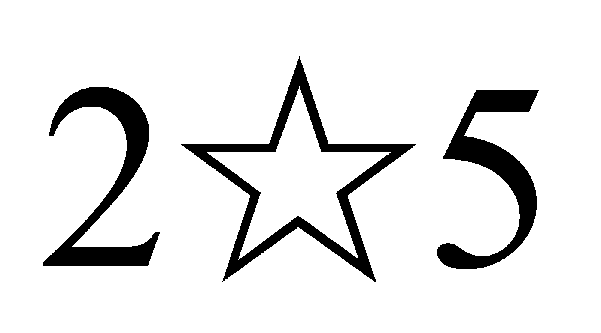
；(2) ．
．
21．如图是由若干棱长为 的小正方体搭成的几何体．
的小正方体搭成的几何体．

(1)请你在网格中分别画出它从左面看和从上面看的图形；
(2)求这个几何体的表面积（含底面）；
(3)若你手边还有一些相同的小立方块，如果保持从上面和左面观察到的形状图不变，那么最多可以添加多少块小立方块．
22．出租车司机小李某天上午运营全是在某条南北走向的路上进行的，如果规定向北为正，向南为负，这天上午他的行车里程（单位：千米）如下： ，
， ，，
，， ，
， ，
， ．
．
起步价 （3千米以内） | 超过3千米部分每千米费用 （不足1千米以1千米计） | 等候费 （不足1分钟以1分钟计） | |
（单价：元） | 11 |
| 每4分钟 |

(1)若记出发点位置为A，将最后一位乘客送到目的地时，小李在什么位置？
(2)若汽车耗油量为 升/千米，小李接送这六位乘客，出租车共耗油多少升？
升/千米，小李接送这六位乘客，出租车共耗油多少升？
(3)小李师傅接到第三位乘客后，刚好遇上高峰期，遇红灯及堵车等候时间约为32分钟，问第三位乘客需支付车费多少元？
23．在学习一个数的绝对值过程中，化简 时，可以这样分类：当
时，可以这样分类：当 时，
时， ；当
；当 时，
时，
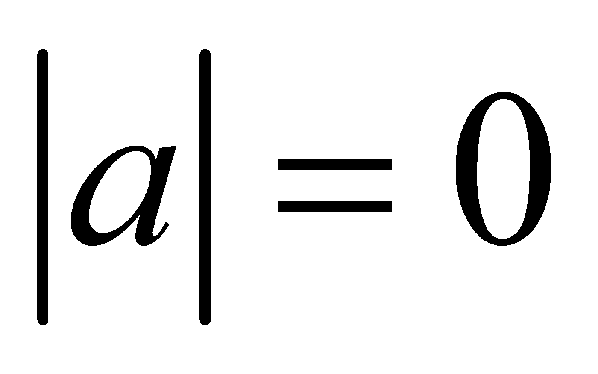
；当 时，
时， ，请用这种方法解决下列问题．
，请用这种方法解决下列问题．(1)当 时，分别求
时，分别求 的值；
的值；
(2)已知 是有理数，当时，试求
是有理数，当时，试求 的值；
的值；
(3)已知 是有理数，当
是有理数，当
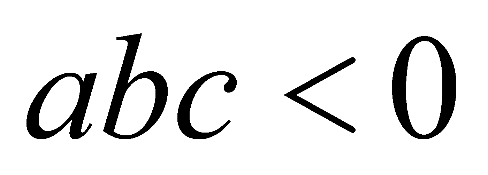
时，试求 的值．
的值．24．综合与实践
【问题情境】如图，将边长为10cm的正方形纸片，四角各剪去边长为 的小正方形，折成无盖长方体纸盒，当x取何值时，纸盒的容积
的小正方形，折成无盖长方体纸盒，当x取何值时，纸盒的容积 有最大值？
有最大值？
【整理·汇总】x的值按如表的整数值依次变化时，纸盒的容积如表所示：
边长 | 1 | 2 | 3 | 4 | 5 |
纸盒容积 | 64 | a | b | 16 | 0 |


(1)【操作·分析】
①上表中，a=______，b=______；
②随着x的增大，纸盒的容积V变化情况是______（单选题）；
A．一直增大 B．一直减小 C．先增大后减小 D．先减小后增大
(2)【思考·猜想】观察上表中的边长x与纸盒容积V变化情况可得：当x为______cm（x为整数）时，纸盒的容积最大，为______cm3：
(3)【反思·拓展】当纸盒的容积V最大时，边长x的值未必恰好就是整数，会不会是小数呢？针对这个问题，请你写出解决方案（x精确到0.1cm，V精确到 ）．
）．
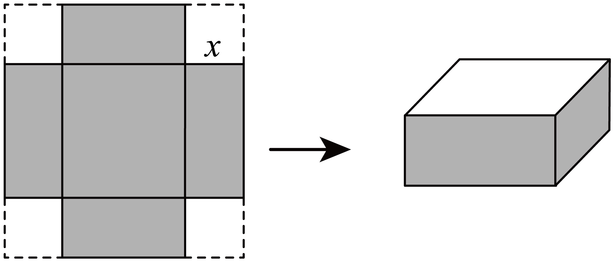
25．阅读材料：小兰在学习数轴时发现：若点 表示的数分别为
表示的数分别为 ，3，则线段
，3，则线段 的长度可以这样计算：
的长度可以这样计算： 或
或
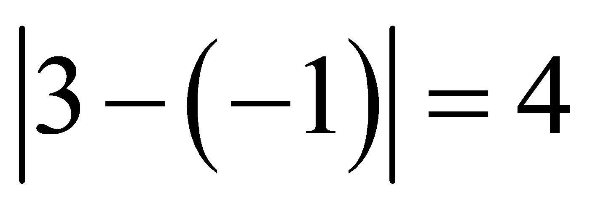
，那么当点表示的数分别为m，n时，线段的长度可以表示为 或
或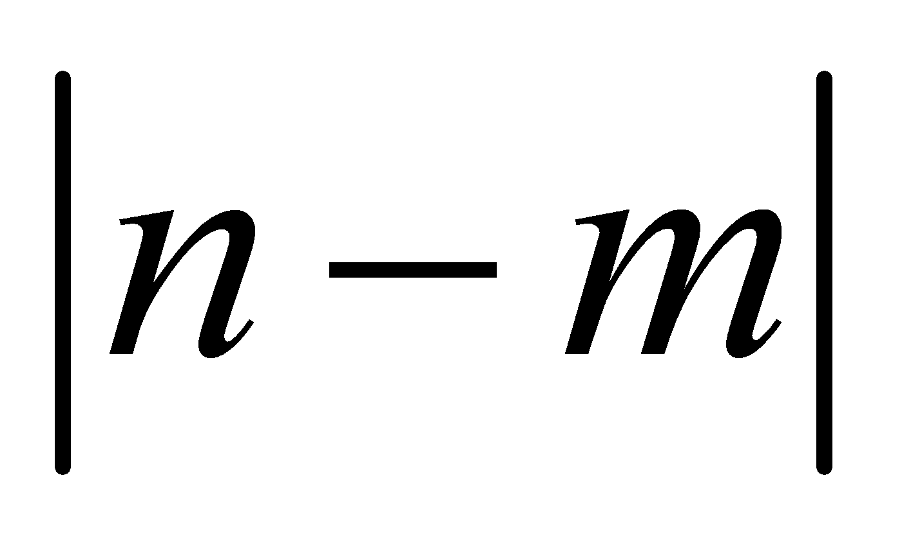
．请你参考小兰的发现，解决下面的问题．
在数轴上，点A，B，C分别表示数a，b，c．给出如下定义：若 ，则称点B为点A，C的双倍绝对点．
，则称点B为点A，C的双倍绝对点．

(1)如图1， ．
．
①若 ，点
，点 在数轴上分别表示数
在数轴上分别表示数 ，5，7，在这三个点中，点 是点
，5，7，在这三个点中，点 是点 的双倍绝对点；
的双倍绝对点；
②若B是的双倍绝对点，且
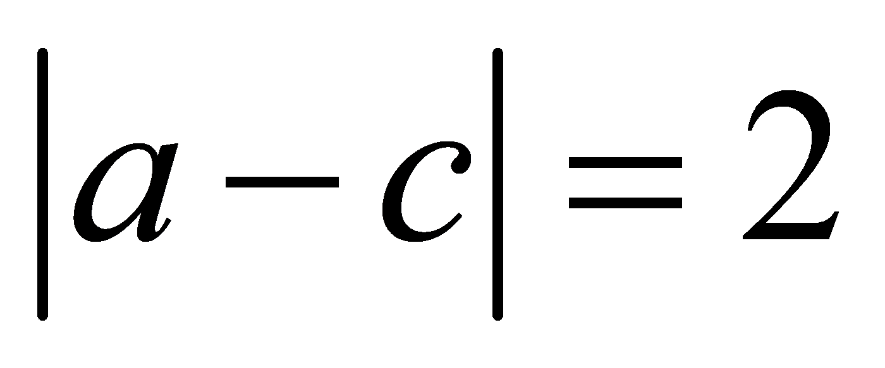
，则 ；
；(2)若
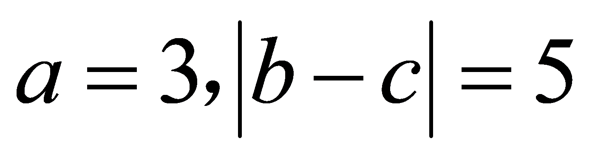
，B为点 的双倍绝对点，则
的双倍绝对点，则 的值为 ．
的值为 ．